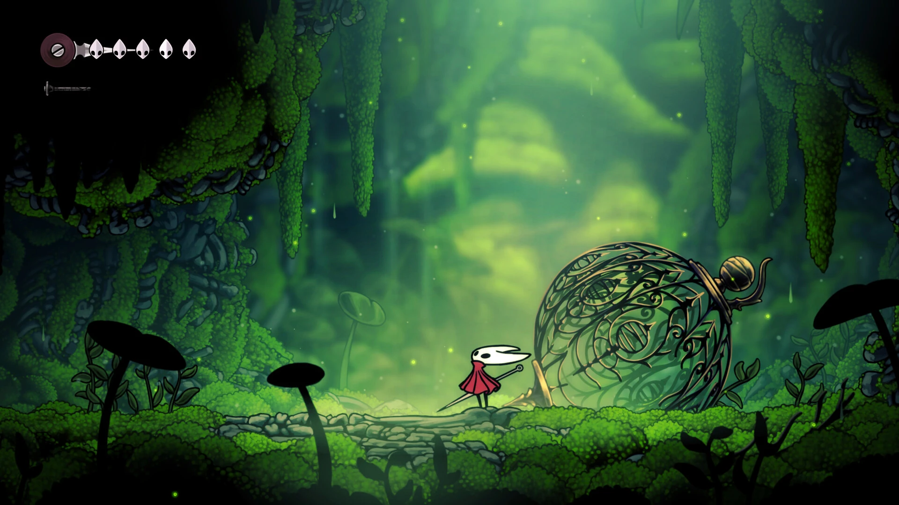
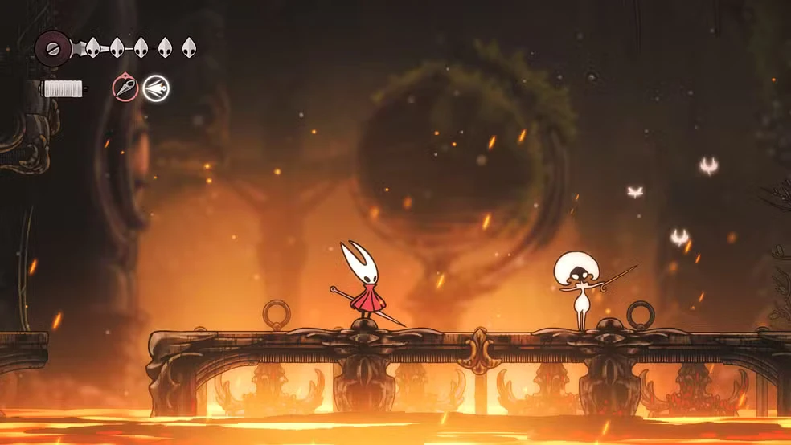
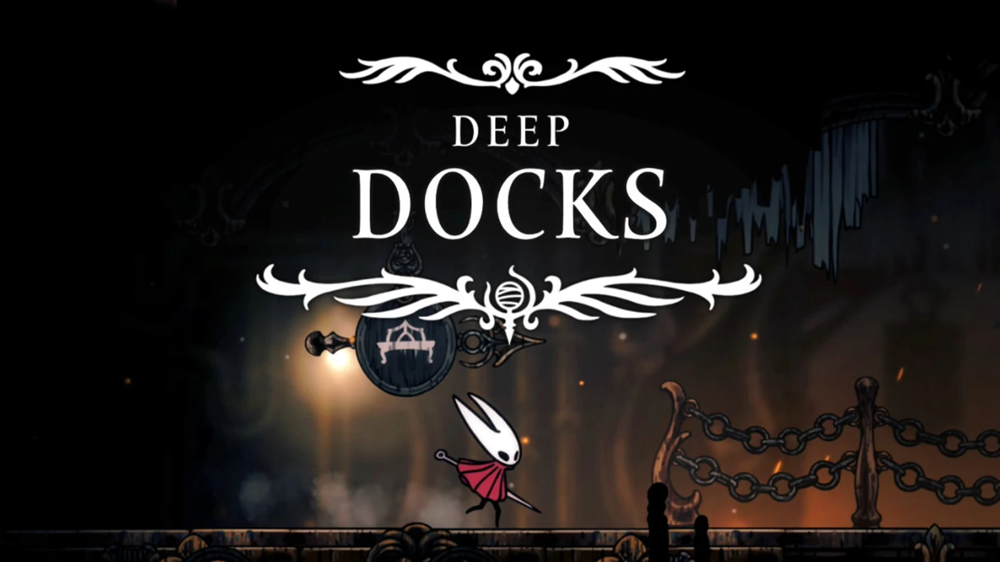
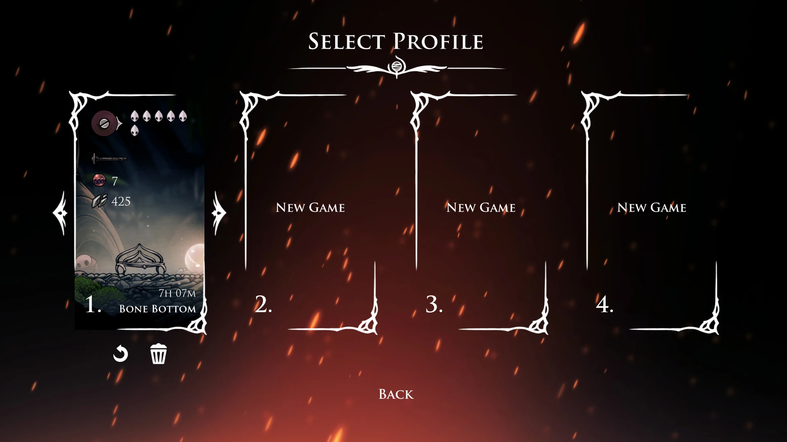
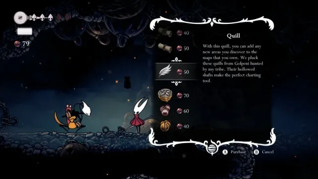
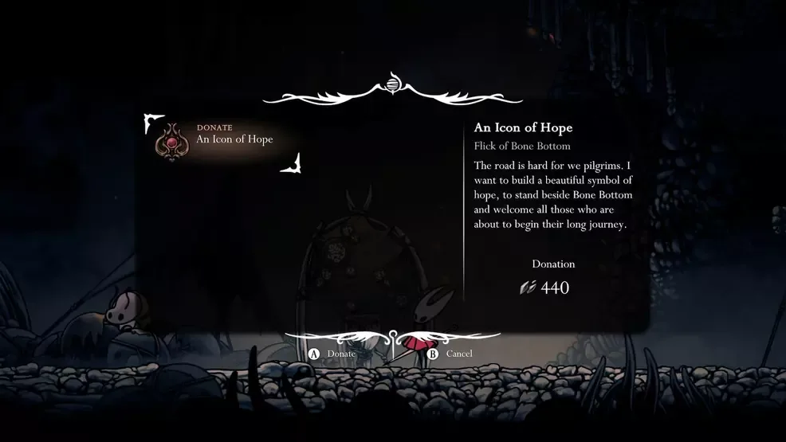
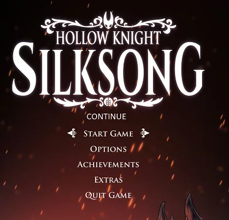
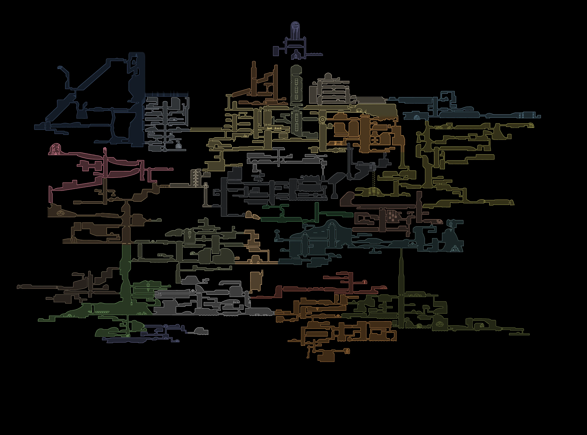

Um mapa do reino onde cada ponto guarda o que os fãs fizeram ali.
A Hollow Page era azul e lunar. Aqui o fundo esquenta: musgo, brasa e o vermelho da capa da Hornet sobre um preto que puxa para o vinho.







Tiradas dos prints. O osso é a única cor dos ornamentos. O carmim aparece pouco e sempre quer dizer a mesma coisa: aqui tem gente.
Preto da tela de perfis, puxado para o vermelho.
#0C0706
#171010
#261A18
#4A2220
Ornamento, texto e o fio vermelho da Hornet.
#F3EEE8
#BFB2AC
#C8323A
#E8636A
Tingem o mapa e o topo do mini feed de cada lugar.
#376742
#8CC06F
#E8873C
#F2AA57
Sai a Inknut Antiqua, entra a Cinzel, que tem o desenho romano dos menus do jogo. A Alegreya Sans continua, é o que liga as duas versões.
Só em osso, sempre. As molduras de título novas trocam os bichos do primeiro jogo por objetos de Pharloom: agulha, carretel, sino e espinho. Cada região usa uma.
Card de post e modal simples.
Aviso, perigo e excluir.
Conquista desbloqueada e perfil.
Os cantos que você vetorizou. Ficam para o modal grande.
Campo em foco e item escolhido.
Item ativo do menu e links.
Entre título e texto de cada seção.
Fim da rolagem quando tem mais posts.
Retângulos de canto reto, linha fina e ornamento só onde o momento pede. O modal grande fica para publicar e para conquistas; o resto usa o simples.
Seu personagem fica parado no último banco em que você sentou.
Seu post fica no banco de Bone Bottom. Quem passar por lá vai ver.
O mapa grande é a viagem rápida: mostra como as regiões se ligam e onde tem movimento. Arraste para olhar, clique numa agulha para ver os posts dali ou no nome de uma região para entrar nela.
Dentro de uma região o mapa vira o mapa de salas do jogo. Seu vessel anda até onde você clicar (ou pelas setas do teclado); perto de um ponto aparece o aviso para ver os posts. Quem está online aparece no mapa também.

Todo post tem o mesmo topo e o mesmo rodapé. Só o meio muda. A reação é em rosários, a moeda do jogo.
A casca que é você no mapa. Ele não luta nem perde vida, só anda e aparece para os outros. As peças trancadas saem das conquistas.
Explorar, ler e publicar rende conquistas. Cada uma destrava algo para o perfil: capa, moldura do retrato, título e a insígnia que flutua ao lado do seu nome, inclusive nos seus posts. Andar pelo mapa local acima já conta.